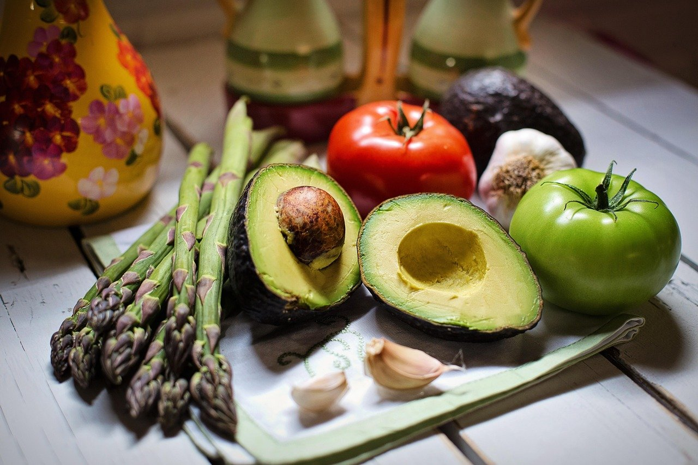

A plant-based kitchen in oneC1ty
AVO makes plant-based restaurant food in oneC1ty, just west of downtown Nashville. The menu includes gluten-free options. Reservations are available for your visit.

-
Plant-based menu
Plant-based food for all guests.
-
Central location
Close to downtown Nashville.
-
Gluten-free
Gluten-free menu options available.
Visit AVO
Nashville
- Tuesday to Saturday
- 11am to 9pm
- Sunday
- 11am to 8pm